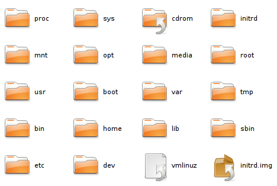

En un sistema de archivos típico, los datos se organizan en archivos y directorios. Un archivo es una colección de datos que tiene un nombre y se almacena como una unidad, mientras que un directorio es un contenedor que puede almacenar archivos y otros directorios, creando una estructura jerárquica. Esta jerarquía facilita la organización y el acceso a los datos, permitiendo que los usuarios naveguen y gestionen sus datos de manera eficiente.
La interfaz del sistema de archivos incluye una serie de llamadas y operaciones estándar que permiten realizar diversas acciones sobre los archivos y directorios. Estas operaciones básicas incluyen la creación, apertura, lectura, escritura, y eliminación de archivos y directorios. Además, las operaciones de administración, como cambiar permisos, renombrar, y mover archivos, son esenciales para la gestión del sistema de archivos. Cada operación involucra una serie de pasos y validaciones para garantizar la integridad y seguridad de los datos.
Un aspecto fundamental de la interfaz del sistema de archivos es la abstracción. Los sistemas de archivos abstractan los detalles físicos del almacenamiento, presentando a los usuarios y las aplicaciones una vista lógica del almacenamiento que es independiente del hardware subyacente. Esta abstracción facilita el desarrollo de aplicaciones, ya que los desarrolladores pueden trabajar con una interfaz uniforme sin preocuparse por las diferencias entre distintos tipos de dispositivos de almacenamiento.
La estructura interna de un sistema de archivos incluye varias capas, cada una de las cuales desempeña un papel específico. La capa de la interfaz de usuario proporciona las herramientas y comandos que permiten a los usuarios interactuar con el sistema de archivos. Por debajo, la capa de administración de archivos maneja las operaciones de alto nivel sobre archivos y directorios. La capa de gestión de bloques se encarga de asignar y gestionar bloques de almacenamiento físico. Finalmente, la capa de dispositivos maneja las interacciones directas con el hardware de almacenamiento.
Para garantizar la integridad y la consistencia de los datos, los sistemas de archivos emplean diversas técnicas y estructuras de datos. Por ejemplo, las tablas de asignación de archivos (FAT), los nodos indexados (i-nodes) y las tablas de inodos son estructuras clave que mantienen un seguimiento de la ubicación y el estado de los archivos en el disco. Además, los sistemas de archivos modernos implementan mecanismos de registro por diario (journaling) para asegurar que las transacciones del sistema de archivos sean atómicas y consistentes, incluso en caso de fallos del sistema.
La seguridad es otro aspecto crítico de la interfaz del sistema de archivos. Los sistemas de archivos deben implementar controles de acceso para proteger los datos contra accesos no autorizados. Esto incluye la configuración de permisos de archivos y directorios, la implementación de listas de control de acceso (ACL), y el uso de cifrado para proteger los datos almacenados. Los permisos típicos incluyen lecturas, escrituras y ejecuciones, y pueden ser asignados a propietarios, grupos y otros usuarios.
El rendimiento del sistema de archivos también es una consideración importante. Los sistemas de archivos deben estar diseñados para manejar eficientemente grandes volúmenes de datos y operaciones concurrentes. Esto se logra mediante técnicas como la caché de datos, la agrupación de bloques contiguos, y la optimización de algoritmos de búsqueda y asignación. Además, algunos sistemas de archivos son específicos para tipos particulares de aplicaciones o entornos, optimizados para manejar, por ejemplo, grandes archivos multimedia o pequeñas transacciones de bases de datos.
La compatibilidad y la interoperabilidad son factores clave, especialmente en entornos heterogéneos. Los sistemas de archivos deben ser capaces de interactuar con diferentes sistemas operativos y dispositivos. Esto ha llevado al desarrollo de estándares y sistemas de archivos universales, como FAT32, NTFS, ext4, y otros, que son ampliamente soportados por múltiples plataformas. Además, los sistemas de archivos de red (NFS, SMB/CIFS) permiten el acceso remoto a los datos a través de la red, facilitando el intercambio de archivos entre diferentes sistemas.
La recuperación de datos es un aspecto crítico de la administración del sistema de archivos. Los sistemas de archivos deben incluir mecanismos para recuperar datos en caso de fallos o corrupción. Esto puede implicar la implementación de herramientas de respaldo y restauración, así como técnicas de recuperación automática que detectan y corrigen errores en los datos almacenados. La redundancia, como los sistemas RAID, también se utiliza para proteger los datos contra la pérdida debido a fallos de hardware.
El manejo de metadatos es otra función esencial. Los sistemas de archivos no solo almacenan datos de usuario, sino también metadatos que describen atributos de los archivos, como su tamaño, tipo, propietario, permisos, y marcas de tiempo. Estos metadatos son cruciales para la administración y el acceso eficiente a los archivos. La estructura y gestión de los metadatos varían entre diferentes sistemas de archivos, pero siempre juegan un papel vital en el funcionamiento del sistema.
Finalmente, la interfaz del sistema de archivos debe evolucionar y adaptarse a las necesidades cambiantes de los usuarios y las tecnologías emergentes. Esto implica la continua mejora y desarrollo de nuevas funcionalidades, como el soporte para grandes volúmenes de datos, la integración con servicios de almacenamiento en la nube, y la mejora en las técnicas de seguridad y rendimiento. La evolución de la interfaz del sistema de archivos es un proceso dinámico que refleja los avances en la tecnología de almacenamiento y las necesidades de la comunidad de usuarios.